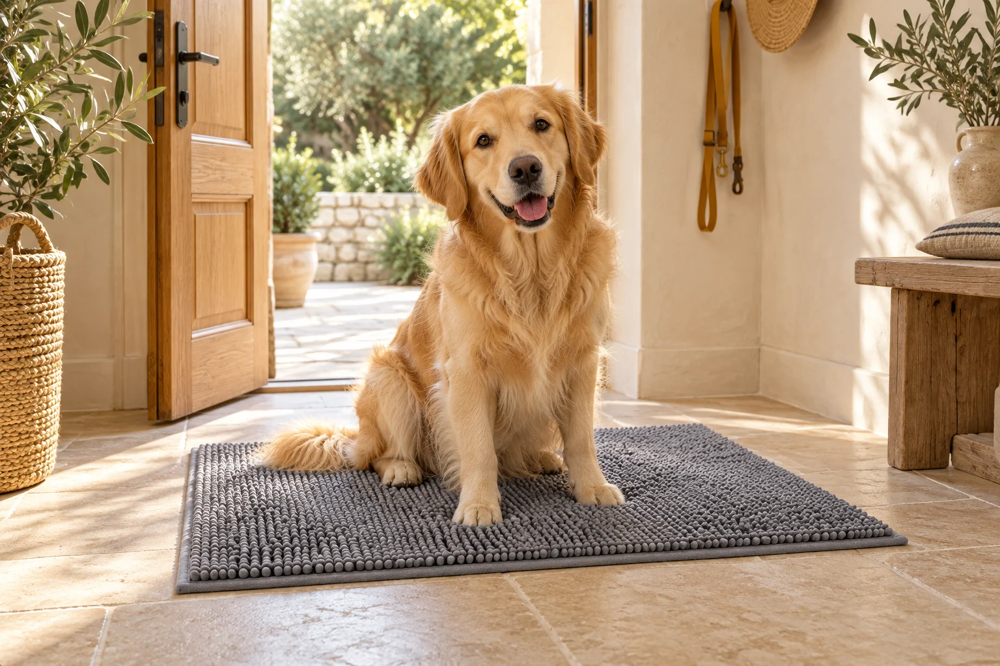
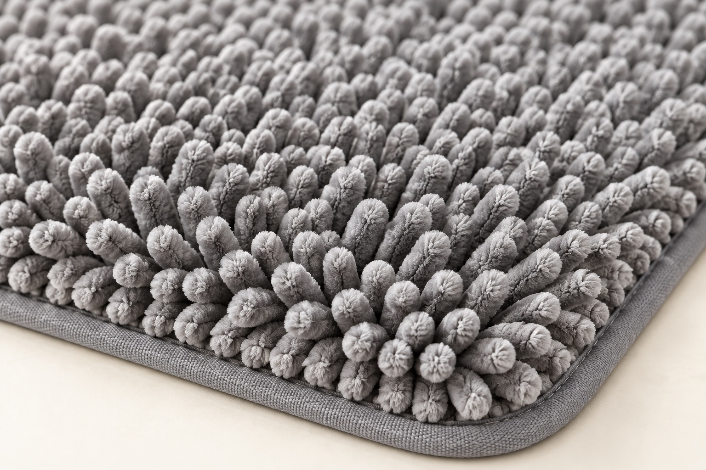
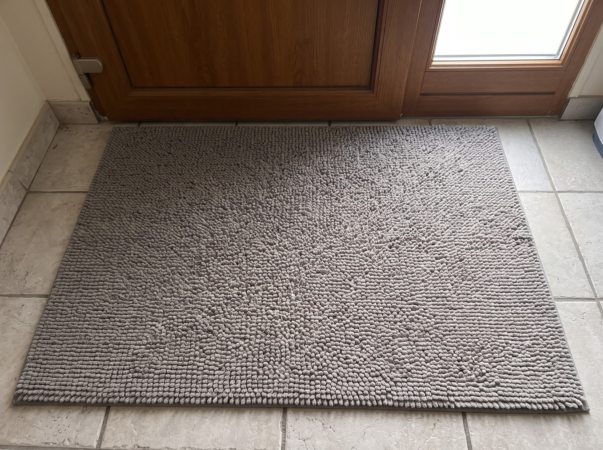
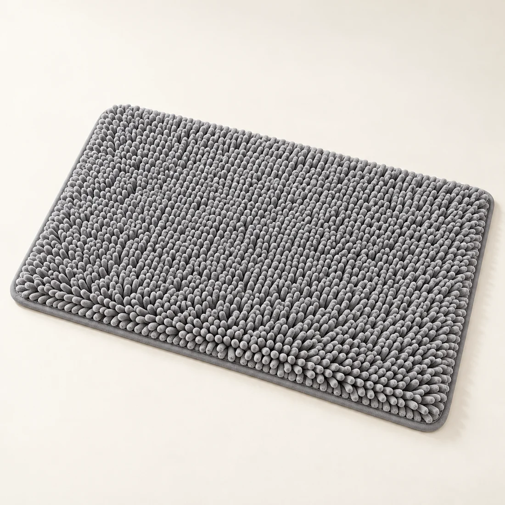
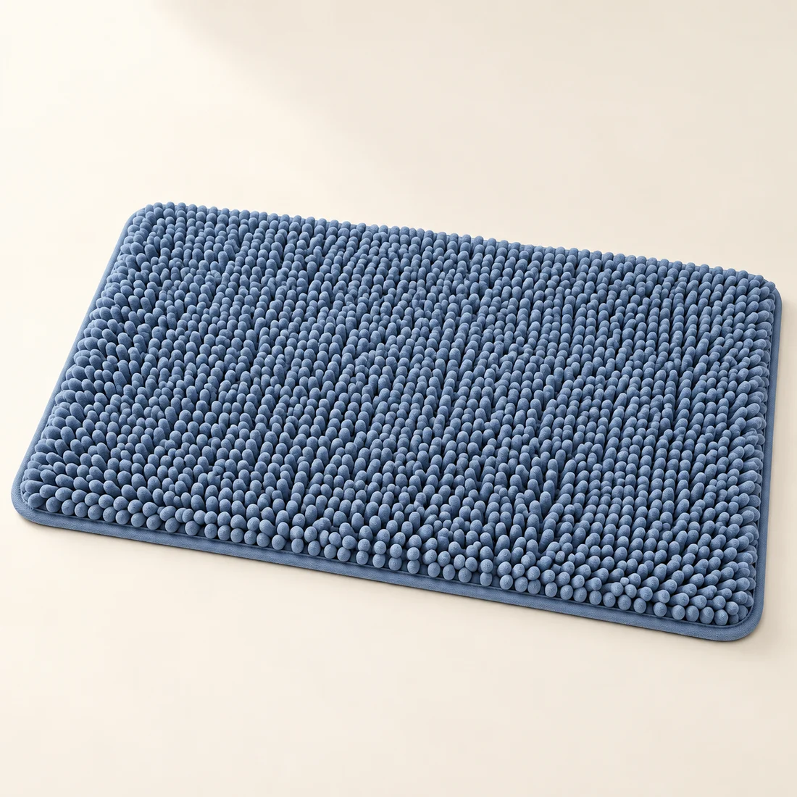
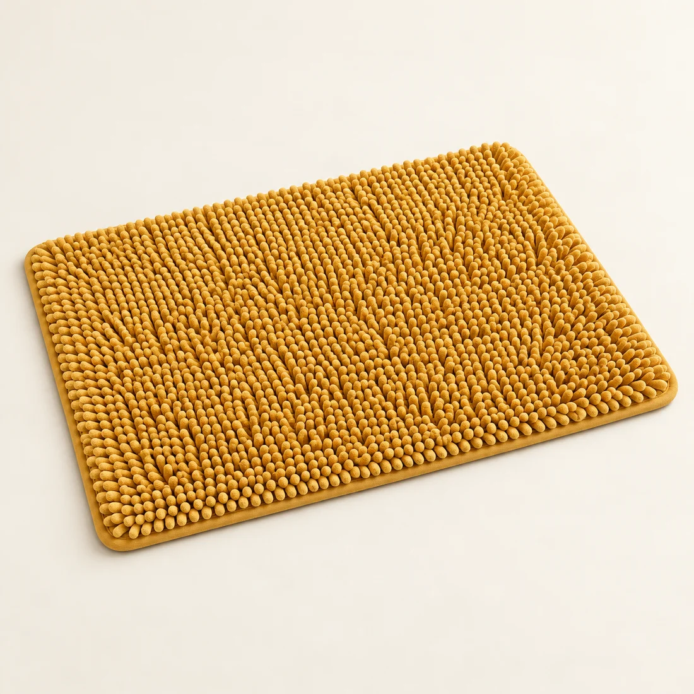
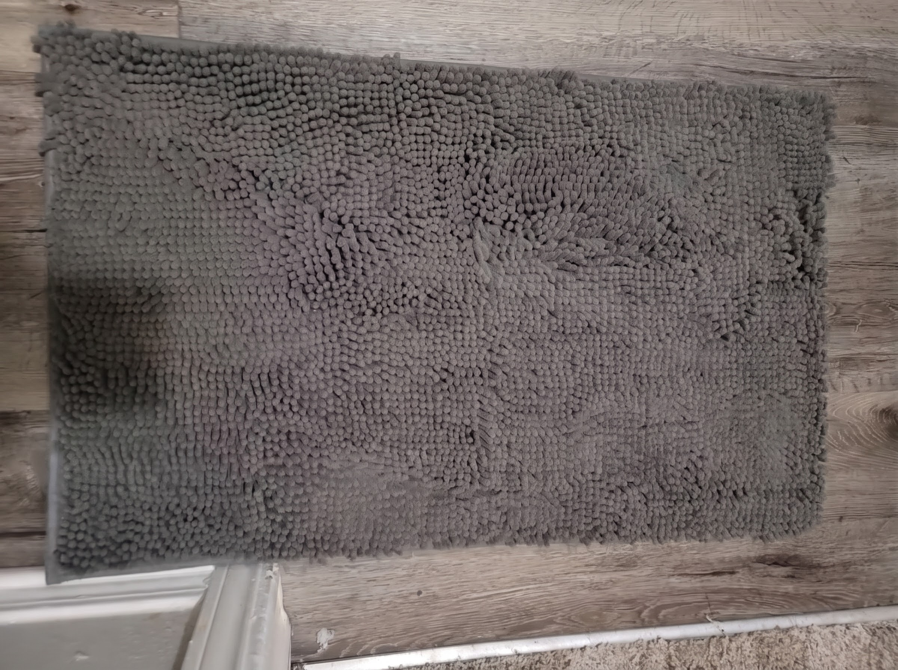

Le petit rituel du retour
Après la balade,
la maison retrouve son calme

Un moment tout simple,
à partager jusqu’au bout des pattes.
PATTEO · LE RETOUR TOUT DOUX
Une pause
à l’entrée

La matière de près
Des fibres chenille
douces au contact.
Juste devant
la porte

La chenille aide à retenir
l’humidité et les saletés
au contact des pattes.
Gris galet
01 — les coloris PATTEO

Bleu balade
02 — les coloris PATTEO

Jaune soleil
03 — les coloris PATTEO

Le format qui va chez vous

Du XS au XL
Dès 23,90 €
Livraison comprise
Cinq formats · trois coloris
Le petit rituel du retour
Le retour
tout doux
Choisis ton coloris
patteo.vercel.app